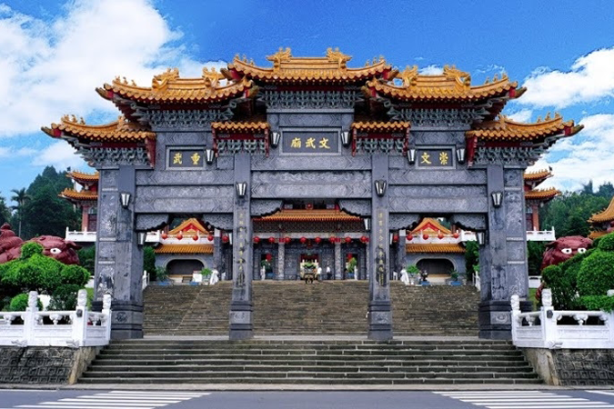

景點介紹
文武廟，位於日月潭北面山腰，座西向東，攬群山為左右，以名潭為前庭，格局壯麗，氣象宏大。 由潭面仰望，但見文武廟踞高臨下，威儀赫赫。從山頂俯視，則見廟址敞朗，座落平穩，意態寬舒。明顯的看出，本廟具有風水之美，地利之便。而群山疊翠，四時花開，山形有如本廟的左右雙手，環抱遠天。名潭則碧波千頃，映照日月，成為本廟開闊美好的前庭。 文武廟有壯觀的正門「三川牌樓」，其後是宏大的廟埕廣場。由廟埕拾階而上，即是本廟的主體建築。 前後共有三殿，依序為拜殿、武聖殿、大成殿。其布局疏落有緻，而結構謹嚴有序，黃瓦紅柱的崇高廟殿，襯以美麗芬芳的後山園林，其氣象讓人欽仰，也使人親近。 融合南北建築風格，是本廟的特色。建築用料名貴，施工細緻，雕工精美，在臺灣廟宇中，具有很大的特色。
